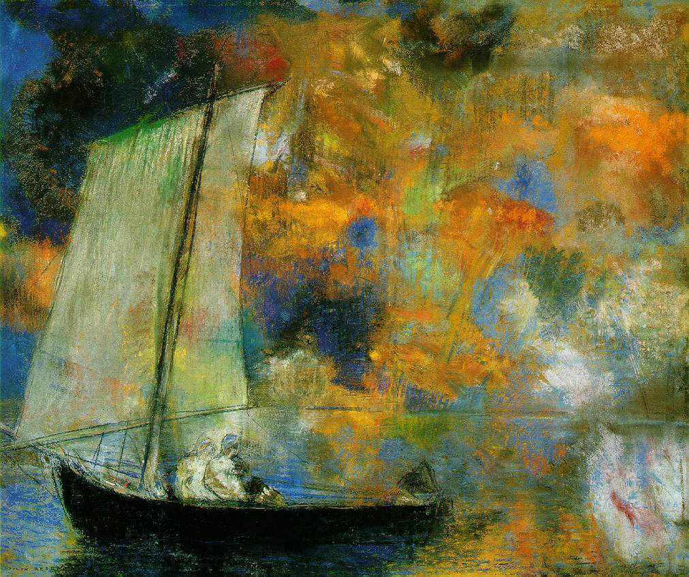
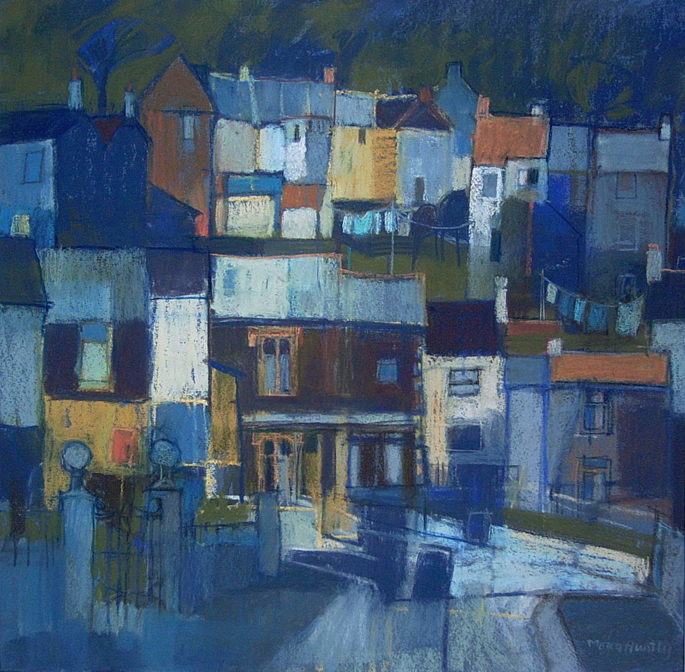

Pastels
Pastels is a medium of art that uses a stick, pebble, or other shape of
pigment in different colors. Pastels do not use a paint brush like many other
mediums of art.


Source: Odilon Redon. Flower Clouds. 1903.
artistsnetwork.com(https://www.artistsnetwork.com/art-history/pastel-drawings-famous-artists-time/)
Source: The Pastel Society.
mallgalleries.org(https://www.mallgalleries.org.uk/learning/resources/history-pastels)
Pastels was first used in the sixteenth century most notably by Leonardo da Vinci.
It became incredibly popularized in the 18th and 19th century, and is still as popular
today. This medium is best known for its vibrant color and opaque appearance.
Learn more
Famous Artists
Jean-François Millet

Source: Jean-François Millet. Shepherdess and Her Flock. 1864.
getty.edu(https://www.getty.edu/art/exhibitions/millet_pastels/)
Jean-François Millet was a French artist who painted almost exclusively with pastels, matering
his craft in this medium. He was most known for his realism movement paintings. He enjoyed painting
landscapes.
Learn More
Childe Hassam

Source: Childe Hassam. Summertime. 1891.
howtopastel.com(https://www.howtopastel.com/2014/09/childe-hassam-master-pastelist/)
Fredrick Child Hassam was an American painter, best known for his urban and costal landscapes.
He painted impresssionism, which was a very popular style in early America and Europe. He
created over 3000 works of art, in many mediums including oil paint, pastels, watercolor, etc.
Learn More
HTML validator
Source: W3C.
validator.org(https://validator.w3.org/)
CSS validator
Source: W3C.
jigsaw.org(https://jigsaw.w3.org/css-validator/)